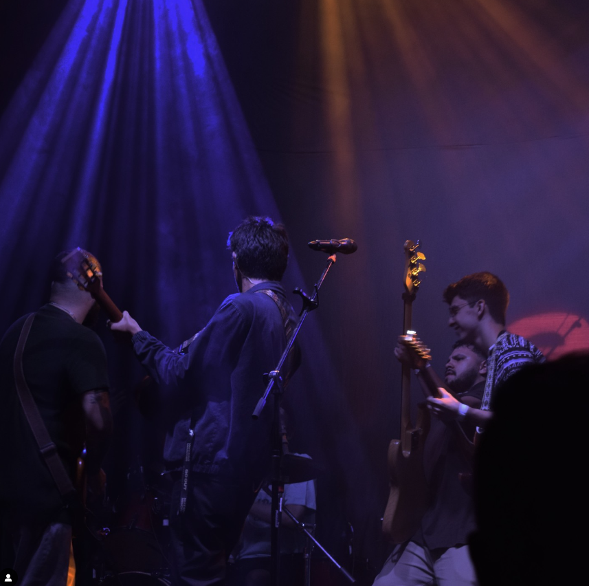

Retorno da banda ao Brasil após quatro anos. Última apresentação foi no Carioca Club, São Paulo, em 2019.
Esteban Tavares, 2023
Turnê de comemoração aos 10 anos do álbum "¡Adios Esteban!".
Projeto NX
Em 2023, depois de cinco anos afastados, o NX voltou com a Tour Cedo ou Tarde, um reencontro que culminou em duas noites inesquecíveis no Allianz Parque
Minha São Paulo
É o meu refúgio, meu lar, onde o amor e as raízes que me sustentam estão profundamente fincados.
Família
Minha maior inspiração, primeiros modelos, minha mãe, meu pai, e meus irmãos Maria Cecília e Miguel, que sempre estiveram ao meu lado, oferecendo amor, compreensão e coragem

Hibalta
Banda de abertura na Turne Cedo ou Tarde do NxZero no show em santos no litoral paulista.
Vasto Restaurante
Um imponente bar no estilo americano representa uma atração à parte, onde os clientes poderão apreciar deliciosos drinks e degustar o menu exclusivo VASTO.